사이트 탭 + 어드민
사용법 메뉴얼
학회원 화면(bdai.co.kr 상단 탭)을 기준으로, 각 탭마다 어드민에서 어디를 열고 무엇을 하면 되는지를 상세히 정리합니다.
1. 시작
LMS는 사이트(학회원 화면)와 운영 어드민으로 나뉩니다. 사이트에서 보이는 상태(분반, 출석, 점수, 공지, 신청)를 어드민에서 만들고 고칩니다.
| 공간 | 용도 | 경로 |
|---|---|---|
| 사이트 | 수업·공지·knock 등 이용 | bdai.co.kr |
| 강사/현직자 포털 | 담당 수업·현직자 기능 | /instructor/ |
| 운영 어드민 | 승인·출결·점수·공지 관리 | /admin/ |
어드민 접속
- 공용 운영 계정으로 로그인
/admin/이동- Slack 6자리 인증 입력
3. 대시보드 (로그인 홈)
로그인 직후 요약 화면입니다. 배너·알림·수강 중 분반 바로가기가 모입니다.
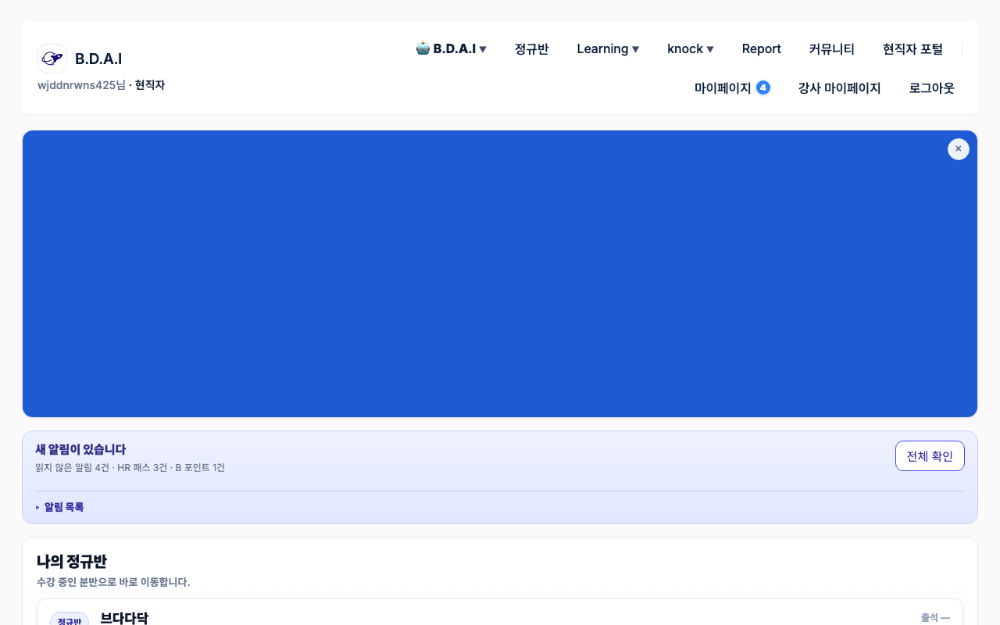
이 화면에서 확인할 것
- 알림 — HR 패스, B포인트 등 미확인 건
- 나의 정규반 — 수강 배정된 분반 카드 (출석 요약 포함)
- 분반이 안 보이면 → 회원 승인 또는 수강(Enrollment) 미배정
대시보드에 분반·배너·알림이 맞게 보이게 하려면
대시보드 자체는 별도 “편집 화면”이 아니라, 아래 데이터가 모여 보이는 요약입니다.
1) 「나의 정규반」이 비어 있을 때
- 어드민 왼쪽 회원·권한 → 회원 목록에서 해당 계정 승인 상태 확인
- 왼쪽 일상 운영 또는 정규반 → 정규반 CSV 업로드로 수강(Enrollment) 배정
- 배정 후 사이트 대시보드를 새로고침해 분반 카드가 뜨는지 확인
2) 상단·대시보드 배너
- 왼쪽 광고·제휴 또는 대시보드·지표 → 광고 배너 및 예산 대시보드
- 지면(대시보드 등)·노출 기간·이미지를 확인·수정
- 실험 중이면 BDAI × BDAIB에서 A/B가 대신 노출될 수 있음
3) 알림·B포인트
- B포인트 지급: 일상 운영 → B 포인트 지급
- HR 패스 등: Knock 관련 메뉴 (담당 확인)
4. B.D.A.I
취업·학교 생활 정보 영역입니다. 정규반 주간 운영과 별도 담당인 경우가 많습니다.
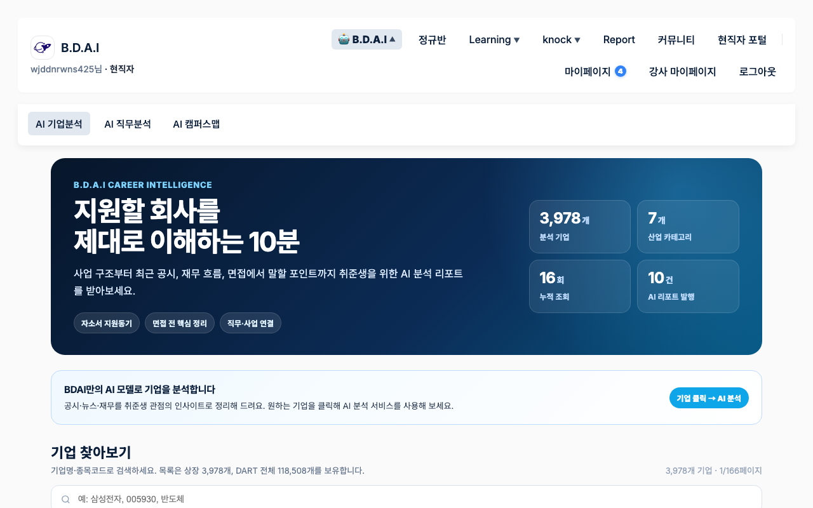
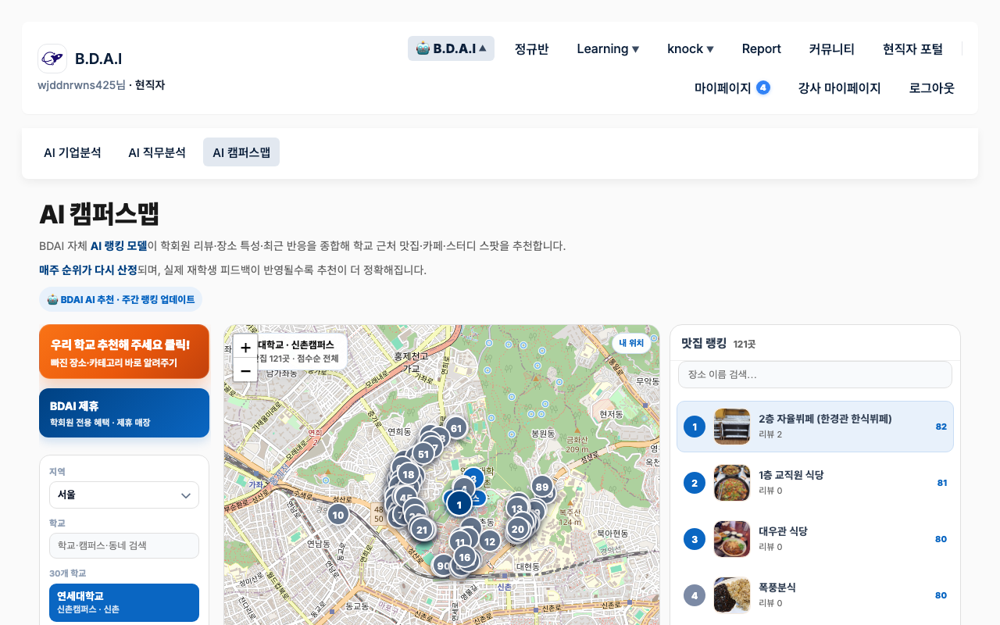
B.D.A.I 탭 운영 방법
왼쪽 탭 AI 기업분석 · AI 캠퍼스맵 · (현황) 대시보드·지표
AI 기업분석
- 왼쪽 AI 기업분석 허브를 연다
- 기업·리포트 데이터 추가/수정은 해당 모델 목록에서 처리
- 회원이 넣은 커피챗 관심 신청은 대시보드·지표 → AI 기업분석 · 커피챗 신청 (또는 같은 허브 내 신청 목록)에서 pending 확인
- 매칭·상태 변경 후 필요 시 메일/문자 안내
AI 캠퍼스맵
- 왼쪽 AI 캠퍼스맵 또는 대시보드·지표 → AI 캠퍼스맵 운영
- 학교별 장소·이미지·제휴 매장 등록/수정
- 학회원 리뷰·추가 요청이 있으면 같은 허브에서 검수
5. 정규반
기수·분반 수업의 중심입니다. 캘린더·공지와 분반 상세(총점·출석·과제·Zoom·자료)가 여기에 있습니다. 운영진 주간 업무의 대부분이 이 탭과 연결됩니다.
5-1. 정규반 홈
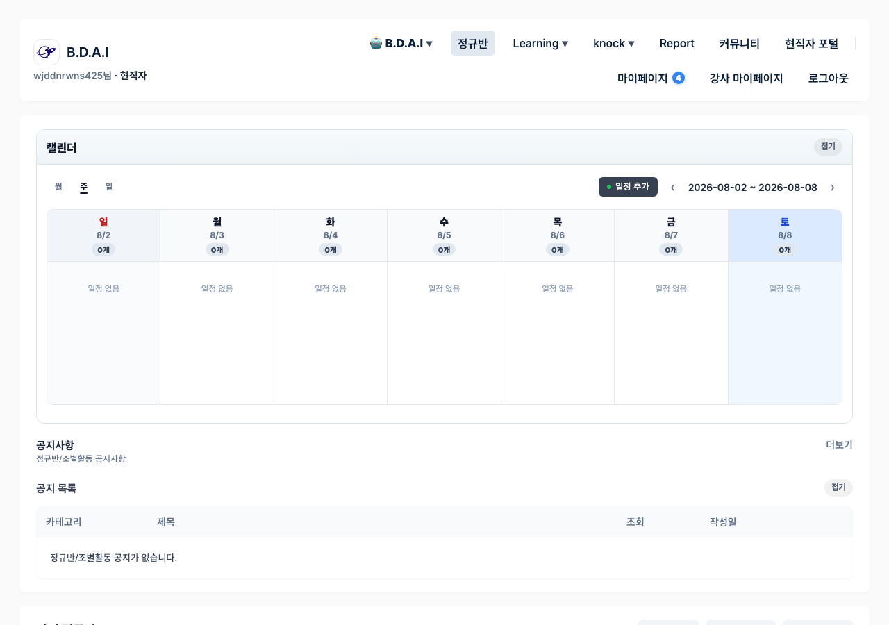
학회원 화면
- 수업·일정 캘린더
- 정규반/조별활동 공지 목록
- 분반 진입은 대시보드 「나의 정규반」또는 분반 링크
운영진
- 공지 내용·일정 노출이 맞는지 수업 전 확인
- 어드민: 정규반 / 커뮤니티(공지)
5-2. 분반 상세 (수업·출결·점수)
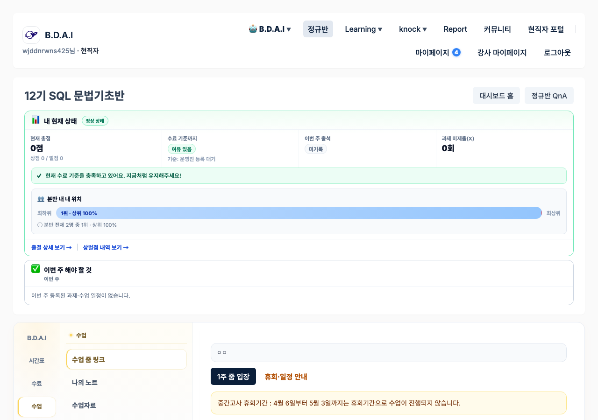
학회원에게 보이는 핵심
- 내 현재 상태 — 총점(상점/벌점), 수료 여유, 이번 주 출석, 과제 미제출
- 이번 주 해야할 것 — 등록된 과제·수업
- 수업 탭 — Zoom 링크, 수업자료, 노트
- 출결·상벌점 상세 링크
정규반 탭 — 상세 운영 절차
주로 쓰는 왼쪽 탭: 정규반 · 일상 운영 · 회원·권한 · 대시보드·지표
A. 회원 승인 (분반 배정 전)
- 왼쪽 회원·권한 → 회원 목록
- 승인 대기 회원을 찾아 상태 승인, 유형(정규반 등) 맞춤
- 개인 학회원 계정에 스태프 권한은 주지 않음 (어드민은 공용 계정 사용)
B. 수강 배정 (Enrollment) — 「나의 정규반」에 카드가 뜨게
- 왼쪽 일상 운영 또는 정규반 → 정규반 CSV 업로드
- 기수·분반·회원 식별값(이메일 등)이 어드민 분반/계정과 일치하는지 확인
- 소수 행으로 테스트 업로드 → 결과 메시지 확인 → 본 업로드
- 수강·분반 목록에서 인원 수 검수
C. 분반 설정 (Zoom·자료·과제)
- 왼쪽 정규반 → 분반(ClassGroup) 목록에서 해당 분반 열기
- Zoom 링크, 수업 자료, 주차별 과제 등록·수정
- 사이트 분반 상세 → 수업 탭에서 노출 확인
D. 출석 반영 (수업 직후)
- 일괄: 일상 운영 → 출석 CSV 업로드 — 컬럼 안내 확인 후 업로드
- 분반별: 분반 상세의 Zoom 출석 가져오기
- 「출석 기록」에서 분반·날짜 건수 검수
- 사이트 분반 상세의 「이번 주 출석」·출결 상세가 바뀌었는지 확인
E. 출결 사유폼 검토 (당일~익일)
- 정규반 → 출결 사유 제출 목록
- 결석·지각·화면 미공유 등 사유 검토
- 벌점 자동 정리는 주기 작업이라 즉시 반영이 아닐 수 있음 (최대 약 1시간)
F. 상벌점
- 일상 운영 → 상벌점 CSV 업로드
- 회원 식별키·분반·점수·사유를 채운 CSV 업로드
- 「상벌점 기록」에서 검수 → 사이트 「내 현재 상태」총점 확인
B포인트는 수료 총점과 별개입니다. 지급은 일상 운영 → B 포인트 지급.
G. 주간 점검
- 대시보드·지표 → 정규반 운영
- 출석률·제출률이 낮은 분반을 찾고, 해당 분반·회원에 안내
H. 시즌 — 조별활동 · 블로그 챌린지
- 조별활동: 정규반 → 조별활동 생성 → 정보 제출 기간 → 자동/수동 팀 매칭 → 일지·채점 → 조장 상점/중도이탈 벌점 액션
- 블로그: 주제 등록 → 제출 목록에서 스탬프 지급(승인) → (시즌 정책에 따라) 보너스 상점 액션
- 중도이탈 현황: 대시보드·지표 → 조별활동·중도이탈
6. Learning
정규반 밖 학습 프로그램·콘텐츠 진입점입니다.
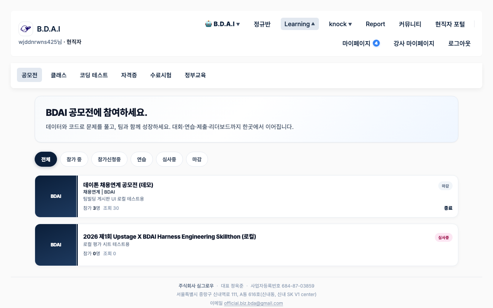
사이트 하위
- 공모전 · 클래스 · 코딩 테스트
- 자격증 · 수료시험 · 정부교육
Learning 탭 운영 방법
왼쪽 탭 Learning + 승인 대기는 일상 운영
1) 강의·클래스 심사 (공개 전)
- 일상 운영 → 강의·클래스 심사 대기 (또는 Learning의 강의 심사 필터)
- 콘텐츠 확인 후 승인 / 반려
- 승인되면 사이트 Learning·클래스에 노출
2) WAVE·원데이·JOB 단편 심사
- 일상 운영 → 단편(WAVE·원데이·JOB) 심사 대기
- 검수 후 승인 / 반려
3) 유료 VOD 입금 승인
- 일상 운영 → 강의 VOD 입금 승인
- 입금 사실 확인 후 승인 → 회원 강의 접근 개방
4) 공모전·스터디·수료시험
- 공모전 제출·평가: Learning → 공모전 제출 / 평가 시트
- 스터디: 공지(카테고리 study)·문제·신청·제출 메뉴
- 수료 시험: 출제·응시 기록 메뉴
7. knock
커리어·네트워킹 허브입니다. 정규반 수업 운영과 축이 다릅니다.
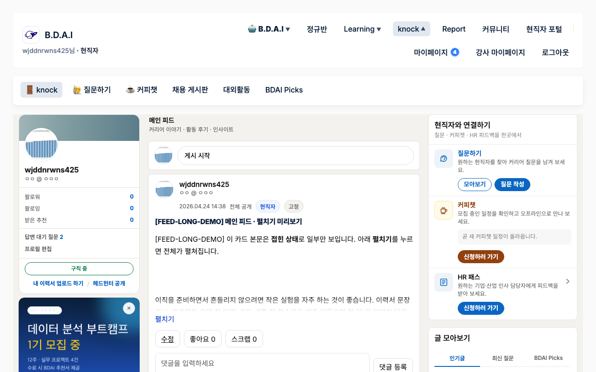
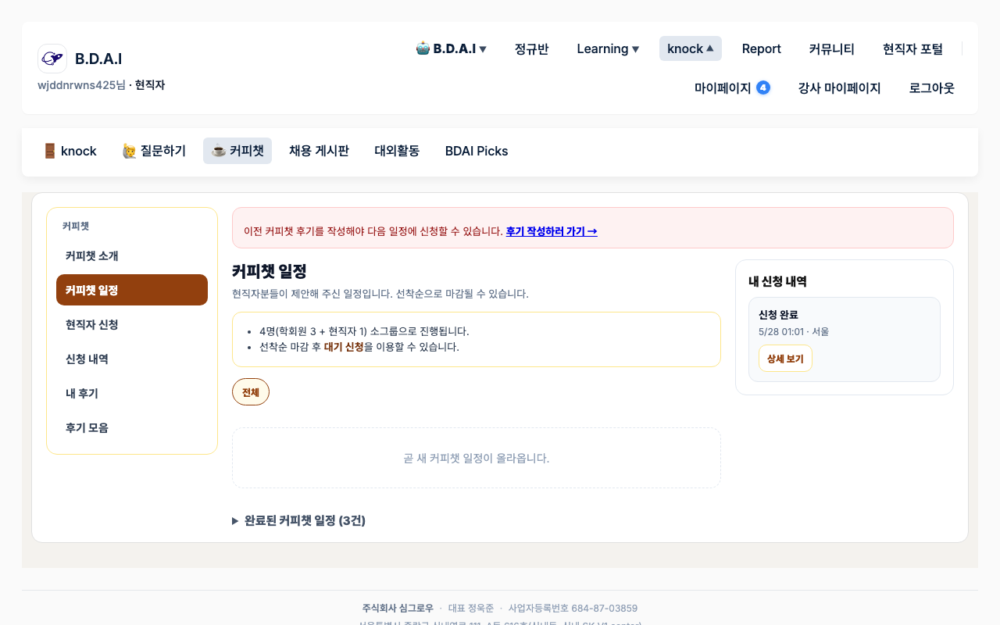
knock 탭 운영 방법
왼쪽 탭 Knock (피드 · HR패스 · 커피챗 · 채용 · 대외활동 · Picks · Magazine)
하위 메뉴별
| 사이트 | 어드민에서 |
|---|---|
| knock 피드 | Knock → 피드/콘텐츠 모델에서 글·노출 관리 |
| 질문하기 / HR 패스 | Knock → HR 패스 · 질문 관련 목록에서 접수·처리 |
| 커피챗 | Knock → 커피챗 일정·신청. (기업분석 관심 신청과 별개일 수 있음) |
| 채용 게시판 | Knock → 채용공고 등록·수정 |
| 대외활동 | Knock → 대외활동 정보 관리 |
| BDAI Picks | 제휴 카드·광고. 광고 대시보드 Picks 섹션 또는 제휴 공지와 연동 |
- 왼쪽 Knock을 열고 하위(피드/HR패스/커피챗 등)를 선택
- 대기·신청 건은 상태 필터로 pending부터 처리
- 사이트
/knock/?tab=…에서 노출·신청 결과 확인
8. Report
리포트 콘텐츠를 모아서 보는 메뉴입니다.
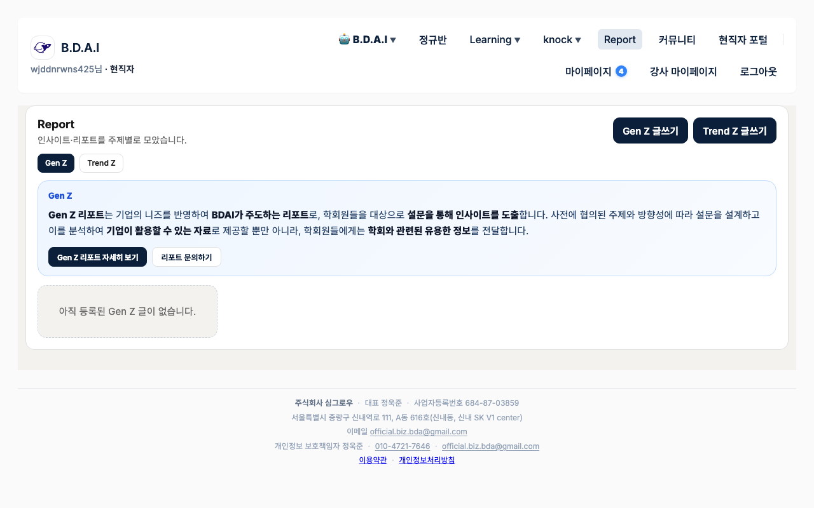
Report 탭 운영 방법
왼쪽 탭 Report · 또는 커뮤니티 → 공지 (카테고리 Gen Z / Trend Z)
- Report 허브 바로가기 또는 공지 목록에서 카테고리 필터
- 리포트 글 작성·수정 (제목, 본문, 대표 이미지, 노출 기간)
- 사이트 Report 탭에서 노출 확인
- 기업·단체 리포트 문의가 있으면 Report/문의 관련 목록에서 처리
9. 커뮤니티
공지·행사와 QnA/게시판입니다. 행사 신청·승인·안내가 운영 핵심입니다.
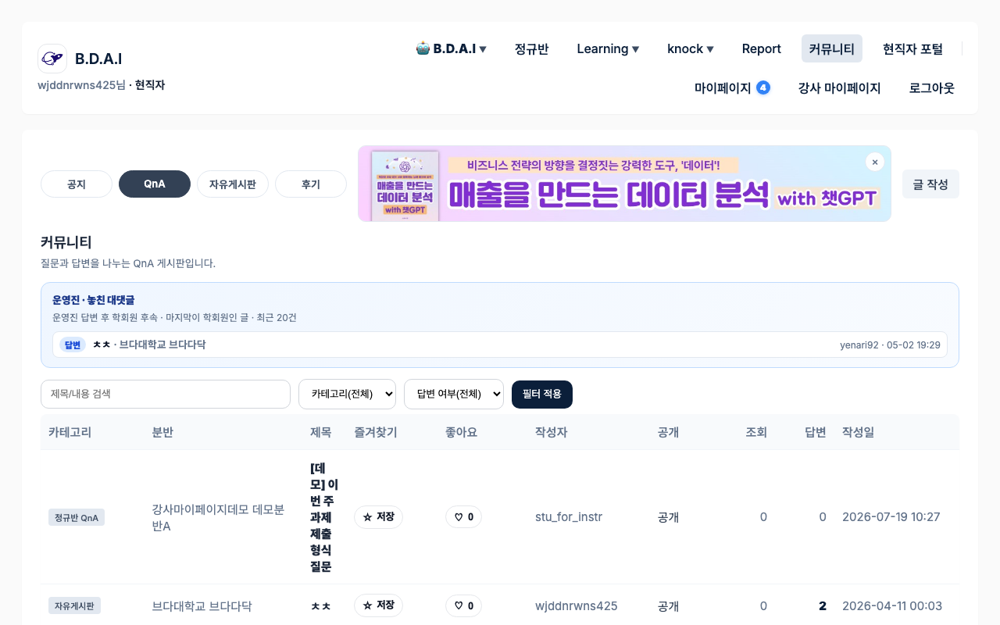
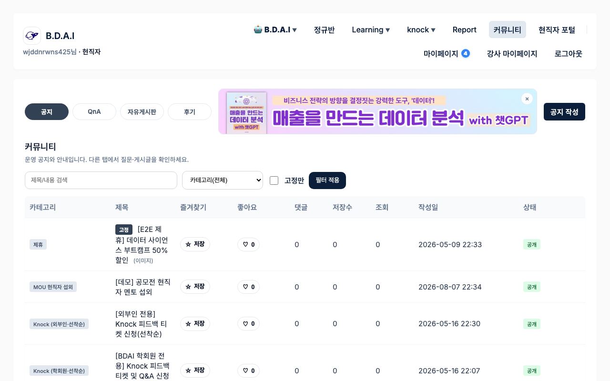
커뮤니티 탭 운영 방법
왼쪽 탭 커뮤니티 · 현황은 대시보드·지표 → 행사 신청
1) 일반 공지 / QnA
- 커뮤니티 → 공지에서 글 작성 (카테고리·고정·노출 기간)
- QnA·자유·후기 글은 커뮤니티 게시판 모델에서 조회·삭제·조치
- 사이트 커뮤니티 탭에서 노출·필터 확인
2) 행사 공지 + 신청 받기
- 공지 작성 시 행사 설정: 신청 기간, 정원, Zoom 링크·노출 시점 등
- 회원이 사이트에서 신청하면 행사 신청 목록에 쌓임
- 신청 건을 승인 / 대기 / 취소 처리
- 필요 시 Zoom 안내 메일·채팅 초대 메일 일괄 발송
3) 현황 보기
- 대시보드·지표 → 행사 신청
- 그룹·행사 필터로 신청·승인·정원 달성 확인
10. 마이페이지
계정·알림·스탬프 등 개인 공간입니다. 운영진이 매일 직접 만지는 탭은 아닙니다.
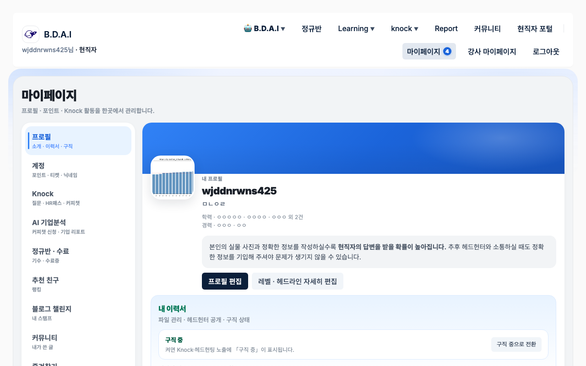
운영과 연결
- 블로그 스탬프 → 정규반에서 제출 승인 시 반영
- 회원 유형/상태 → 회원·권한에서 관리
- 알림 건수 → 사이트 활동·운영 처리 결과
마이페이지에 영향을 주는 작업
마이페이지 전용 편집 화면은 거의 없고, 다른 탭 작업 결과가 여기 숫자로 모입니다.
| 회원에게 보이는 것 | 어드민에서 하는 일 |
|---|---|
| 계정·회원 유형 | 회원·권한 → 회원 승인/유형 수정 |
| 블로그 스탬프 | 정규반 → 블로그 챌린지 제출 → 스탬프 지급(승인) |
| B포인트 알림 | 일상 운영 → B 포인트 지급 |
| HR 패스 알림 | Knock → HR 패스 관련 처리 |
11. 운영 어드민
사이트 탭에 보이는 상태를 관리하는 콘솔입니다. 왼쪽 허브가 업무 구역입니다.
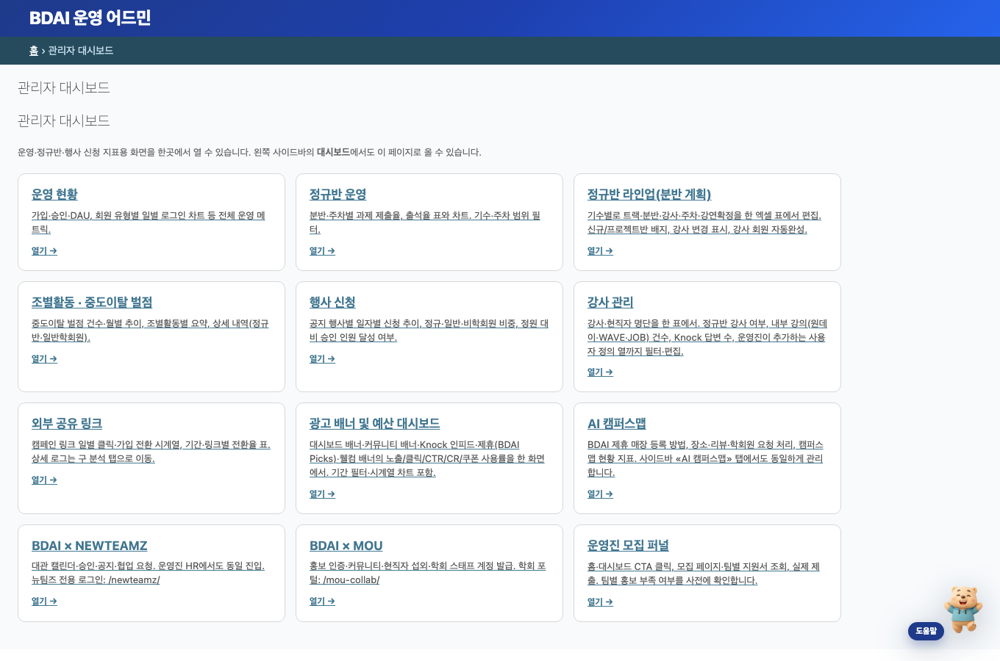
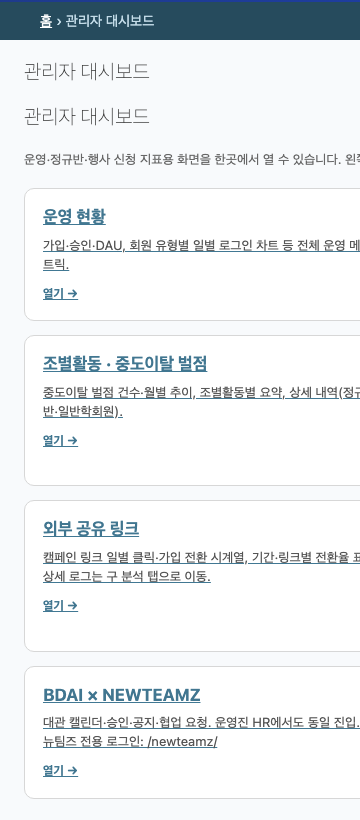
사이트 탭 ↔ 어드민
| 사이트 | 어드민 |
|---|---|
| 정규반 | 정규반 · 일상 운영(CSV) · 대시보드(정규반 운영) |
| 커뮤니티 | 커뮤니티 · 행사 신청 대시보드 |
| Learning | Learning · 일상 운영(심사·입금) |
| knock | Knock |
| B.D.A.I | AI 기업분석 · AI 캠퍼스맵 |
| Report | Report |
| 모집 시즌 | BDAI 학회원 모집 · BDAI Form |
왼쪽 탭을 이렇게 쓰면 됩니다
| 왼쪽 탭 | 언제 여나 | 대표 작업 |
|---|---|---|
| 대시보드·지표 | 현황·이상치 확인 | 정규반 운영, 행사 신청, 라인업 |
| 일상 운영 | 매일·매주 반복 | 출석/상벌점/수강 CSV, B포인트, 심사·입금·첨삭 큐 |
| 회원·권한 | 가입·역할 | 승인, 유형, 강사/현직자 신청 |
| 정규반 | 수업 데이터 | 분반, 수강, 출결, 과제, 조별, 블로그 |
| 커뮤니티 | 공지·행사 | 공지 작성, 신청 승인 |
| Learning / Knock / … | 담당 영역 | 위 사이트 탭 설명 참고 |
| BDAI 학회원 모집 / Form | 모집·설문 시즌 | 서베이, 입금 CSV, 폼 응답 승인 |
막히면
- 어드민 화면의 Daybear(도움말)에서 키워드 검색 (출석, 상벌점, 모집…)
- 이 메뉴얼에서 해당 사이트 탭 섹션의 「어드민에서」 블록 확인
12. 주간 운영 (정규반)
| 때 | 할 일 | 어디 |
|---|---|---|
| 수업 전 | Zoom·자료·과제 노출 확인 | 사이트 정규반 · 어드민 분반 |
| 수업 직후 | 출석 반영 | 어드민 일상 운영 / 정규반 |
| 당일~익일 | 출결 사유폼 검토 | 어드민 정규반 |
| 주중 | 상벌점·미제출 안내 | 일상 운영 · 정규반 |
| 주 1회 | 출석·제출률 이상 분반 확인 | 대시보드 → 정규반 운영 |
13. 문의
- 사이트 탭에서 회원 화면 확인
- 위 매핑으로 어드민 구역 찾기
- Daybear 키워드 검색
- 담당자: 목적 + URL + 한 일 + 오류/결과